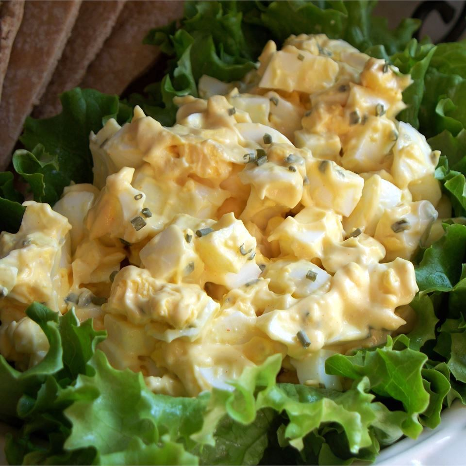

Egg Salad for Sandwiches

No matter the season, egg salad can always be enjoyed!
This egg salad is so delicious you can eat it by itself or
you can add it between two pieces of your favorite bread.
Take your pick of either white or wheat. All that matters
is that the bread is soft and delicious!
Ingredients
- 8 eggs
- 1/2 cup mayonnaise
- 1 teaspoon prepared yellow mustard
- 1/4 cup chopped green onion
- salt and pepper to taste
- 1/4 teaspoon paprika
Steps
- Place egg in a saucepan and cover with cold water.
Bring water to a boil and immediately remove from heat.
Cover and let eggs stand in hot water for 10 to 12 minutes.
Remove from hot water, cool, peel and chop.
- Place the chopped eggs in a bowl, and stir in the
mayonnaise, mustard and green onion. Season with salt,
pepper and paprika. Stir and serve on your favorite bread
or crackers.